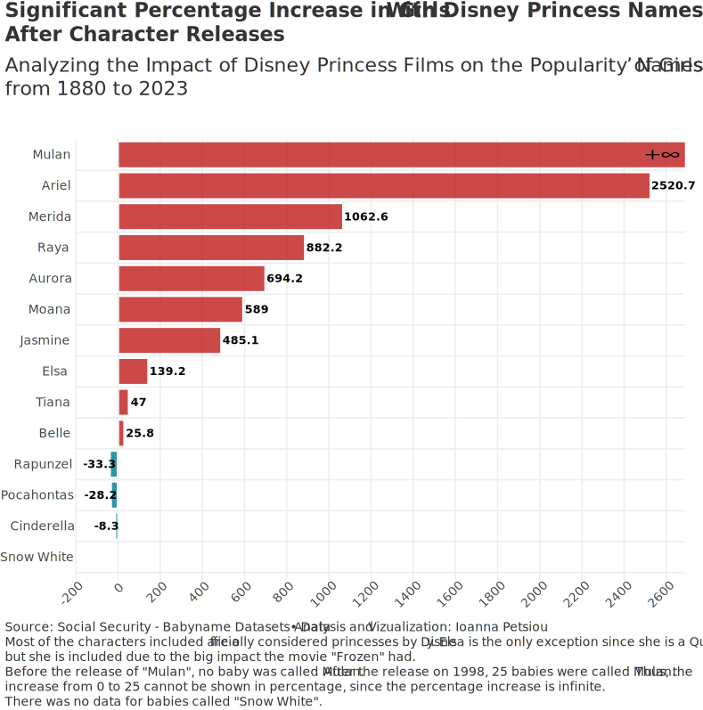

Disney Princesses are loved by many. Their movies still get million of views, and parents make sure to tell their kids about the stories of the older princesses.
Many Disney Princesses have quite unique names, that fit them perfectly, and intrigue the viewers. Personally, Ariel is my favorite (this is why I've styled my hair to match hers).
I have even thought about calling my future daughter "Ariel"!
But do others think like me? Do parents name their children after their favorite Disney Princess?
Let's see if there is a percentage increase in girls in the US with princesses' names after the release year of each character.
